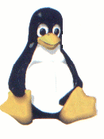

Nesta seção ofereceremos material informativo sobre os mais variados assuntos na área de informática, sendo que a concentração maior estará voltada a programação, em especial nas linguagens Fortran, Pascal, Visual Basic, HTML; ainda ofereceremos tutorais em aplicativos Windows e Linux.
Esta página está aberta a cooperação de qualquer pessoa interessada, salientando que a qualquer publicação será associado o crédito de autoria.
Vale lembrar que não fornecemos, nem aceitamos, material que tenha direitos autorais requeridos(salvo com a devida autorização do autor).
Bases de Programação
Este é um pequeno roteiro que escrevi, onde abordo a lógica de programação, que é um conhecimento básico para todos que pretendem aprender a programar. O trabalho foi iniciado na manhã de 10/09/2001, quando apenas iria criar um roteiro de aulas sobre fluxograma.No momento que digitava, olhei para os velhos livros de Cobol e Pascal, e comecei a meditar sobre a questão da falta de um material sistemático de programação disponível gratuitamente na Internet ou revistas da área. Decidi então ampliar o roteiro que começara a criar, direcionando meu projeto para a exposição de noções de funcionamento do computador, construção do raciocínio através de fluxogramas, discursão sobre linguagens antigas e novas, codificação da lógica exposta pelo fluxograma.
Você poderá acompanhar o desenvolvimento deste projeto de modo "on-line", pois disponibizarei aqui todo o conteúdo em andamento.
Suas sugestões, críticas e cooperação serão bem vindas. Por se tratar de conteúdo aberto, todo aquele que enviar alguma cooperação terá seu conteúdo devidamente creditado. Vale lembrar que esta etapa do projeto visa disponibilizar informações para iniciantes, portanto não será dado nenhum tratamento aprofundado até o final deste módulo.
Visualizar Projeto (Finalizado em: 23/03/2002)
Curso Básico de Programação
Dando continuidade ao projeto de Lógica de Programação, este curso abordará três linguagens diferentes(QBASIC, PASCAL e FORTRAN). Seu objetivo é concretizar o aprendizado da lógica introduzindo o estudante no mundo da programação.
Pode-se perceber pelas linguagens escolhidas que o objetivo do curso é ensinar a programar e não o de forma mão-de-obra para o mercado de trabalho.
Visualizar Curso (Iniciado em: 08/06/2002)
Dica:
Como fazer para o Borland Pascal 7.0 criar um arquivo executável ao compilar um programa.

Dica:
Como configurar o acesso a partição Windows via KDE.